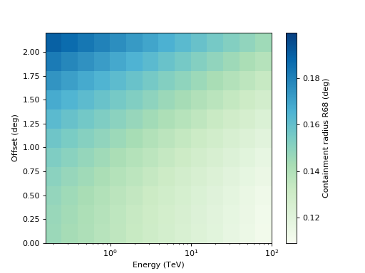

EnergyDependentMultiGaussPSF¶
-
class
gammapy.irf.EnergyDependentMultiGaussPSF(energy_lo, energy_hi, theta, sigmas, norms, energy_thresh_lo=<Quantity 0.1 TeV>, energy_thresh_hi=<Quantity 100. TeV>)[source]¶ Bases:
objectTriple Gauss analytical PSF depending on energy and theta.
To evaluate the PSF call the
to_energy_dependent_table_psforpsf_at_energy_and_thetamethods.Parameters: energy_lo :
QuantityLower energy boundary of the energy bin.
energy_hi :
QuantityUpper energy boundary of the energy bin.
theta :
QuantityCenter values of the theta bins.
sigmas : list of ‘numpy.ndarray’
Triple Gauss sigma parameters, where every entry is a two dimensional ‘numpy.ndarray’ containing the sigma value for every given energy and theta.
norms : list of ‘numpy.ndarray’
Triple Gauss norm parameters, where every entry is a two dimensional ‘numpy.ndarray’ containing the norm value for every given energy and theta. Norm corresponds to the value of the Gaussian at theta = 0.
energy_thresh_lo :
QuantityLower save energy threshold of the psf.
energy_thresh_hi :
QuantityUpper save energy threshold of the psf.
Examples
Plot R68 of the PSF vs. theta and energy:
import matplotlib.pyplot as plt from gammapy.irf import EnergyDependentMultiGaussPSF filename = '$GAMMAPY_EXTRA/test_datasets/unbundled/irfs/psf.fits' psf = EnergyDependentMultiGaussPSF.read(filename, hdu='POINT SPREAD FUNCTION') psf.plot_containment(0.68, show_safe_energy=False) plt.show()
Methods Summary
containment_radius(energy, theta[, fraction])Compute containment for all energy and theta values from_fits(hdu)Create EnergyDependentMultiGaussPSFfrom HDU list.info([fractions, energies, thetas])Print PSF summary info. peek([figsize])Quick-look summary plots. plot_containment([fraction, ax, …])Plot containment image with energy and theta axes. plot_containment_vs_energy([fractions, …])Plot containment fraction as a function of energy. psf_at_energy_and_theta(energy, theta)Get MultiGauss2Dmodel for given energy and theta.read(filename[, hdu])Create EnergyDependentMultiGaussPSFfrom FITS file.to_energy_dependent_table_psf([theta, rad, …])Convert triple Gaussian PSF ot table PSF. to_fits()Convert psf table data to FITS hdu list. write(filename, *args, **kwargs)Write PSF to FITS file. Methods Documentation
-
containment_radius(energy, theta, fraction=0.68)[source]¶ Compute containment for all energy and theta values
-
classmethod
from_fits(hdu)[source]¶ Create
EnergyDependentMultiGaussPSFfrom HDU list.Parameters: hdu :
BintableHDUHDU
-
info(fractions=[0.68, 0.95], energies=<Quantity [ 1., 10.] TeV>, thetas=<Quantity [0.] deg>)[source]¶ Print PSF summary info.
The containment radius for given fraction, energies and thetas is computed and printed on the command line.
Parameters: fractions : list
Containment fraction to compute containment radius for.
energies :
QuantityEnergies to compute containment radius for.
thetas :
QuantityThetas to compute containment radius for.
Returns: ss : string
Formatted string containing the summary info.
-
plot_containment(fraction=0.68, ax=None, show_safe_energy=False, add_cbar=True, **kwargs)[source]¶ Plot containment image with energy and theta axes.
Parameters: fraction : float
Containment fraction between 0 and 1.
add_cbar : bool
Add a colorbar
-
plot_containment_vs_energy(fractions=[0.68, 0.95], thetas=<Angle [0., 1.] deg>, ax=None, **kwargs)[source]¶ Plot containment fraction as a function of energy.
-
psf_at_energy_and_theta(energy, theta)[source]¶ Get
MultiGauss2Dmodel for given energy and theta.No interpolation is used.
Parameters: energy :
QuantityEnergy at which a PSF is requested.
theta :
AngleOffset angle at which a PSF is requested.
Returns: psf :
MultiGauss2DMultigauss PSF object.
-
classmethod
read(filename, hdu='PSF_2D_GAUSS')[source]¶ Create
EnergyDependentMultiGaussPSFfrom FITS file.Parameters: filename : str
File name
-
to_energy_dependent_table_psf(theta=None, rad=None, exposure=None)[source]¶ Convert triple Gaussian PSF ot table PSF.
Parameters: theta :
AngleOffset in the field of view. Default theta = 0 deg
rad :
AngleOffset from PSF center used for evaluating the PSF on a grid. Default offset = [0, 0.005, …, 1.495, 1.5] deg.
exposure :
QuantityEnergy dependent exposure. Should be in units equivalent to ‘cm^2 s’. Default exposure = 1.
Returns: tabe_psf :
EnergyDependentTablePSFInstance of
EnergyDependentTablePSF.
-
{kind=link}
{kind=link}